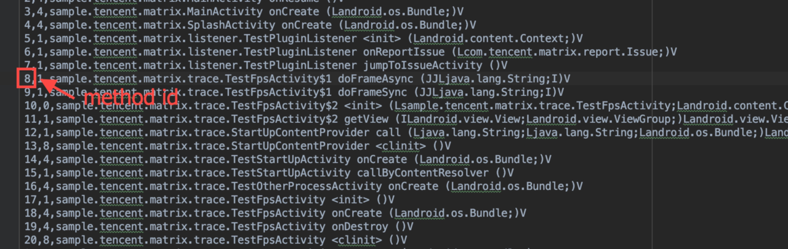
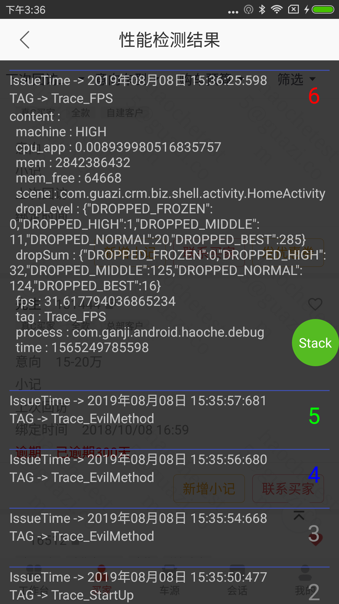

本文讲解微信团队开源的 Android 性能优化检测工具-Matrix 中 TracePlugin 原理，分析检测慢函数、卡顿的过程 。
原理
Trace Plugin 代码框架
Trace Canary通过字节码插桩的方式在编译期预埋了方法进入、方法退出的埋点。运行期，慢函数检测、FPS检测、卡顿检测、启动检测使用这些埋点信息排查具体哪个函数导致的异常。
编译期
函数埋点思路：
代理编译期间的任务 transformClassesWithDexTask，将全局 class 文件作为输入，利用 ASM 工具，修改字节码的方式，在编译期修改所有 class 文件中的函数字节码，对所有函数前后进行打点插桩。

（图示1）matrix tracecanary总框架

（图示2）matrix 编译期方法代码插装分析
代码插桩的整体流程如上图。在打包过程中，hook生成Dex的Task任务，添加方法插桩的逻辑。hook点是在Proguard之后，Class已经被混淆了，所以需要考虑类混淆的问题。
插桩代码逻辑大致分为三步：
- hook原有的Task，执行自己的MatrixTraceTransform，并在最后执行原逻辑
- 在方法插桩之前先要读取ClassMapping文件，获取混淆前方法、混淆后方法的映射关系并存储在MappingCollector中。
- 之后遍历所有Dir、Jar中的Class文件，实际代码执行的时候遍历了两次。
第一次遍历Class，获取所有待插桩的Method信息，并将信息输出到methodMap文件中；
第二次遍历Class，利用ASM执行Method插桩逻辑。
运行期
基于编译期函数插装的逻辑，在运行期，检测到某个方法异常时，会上报一个 methodId，后端通过下图的 methodId 到 method name 的映射关系，追查到有问题的方法。

（图示3）matrix methodmapping文件
API
- FrameTracer
计算掉帧率，生成 json 报告上报
- UIThreadMonitor
ui 主线程监控 回调 doFrame(focusedActivityName, long frameCostMs) 每一帧总耗时，供 FrameTracer 来计算掉帧率（frameCostMs/frameIntervalMs 16.6667 + 1），
- Choregrapher.getInstance()
监控相邻两次 Vsync 事件通知的时间差
- LooperMonitor
implements MessageQueue.IdleHandler 监控空闲事件
FPS 帧率检测
clicfg_matrix_trace_fps_time_slice 表示检测总时长，由IDynamicConfig#getInt() 设置即可
慢函数
- 原理：
上部分讲述了编译器，会在每个方法的执行前后添加 AppMethodBeat.i(int methodId)和AppMethodBeat.o(int methodId)的方法调用，methodId 是在编译期生成的，在运行期是一个写死的常量。通过编译期的这个操作，就能感知到具体每个方法的进入、退出操作。
1 | /** |
- 检测过程
代码统计了当应用处于前台时，在主线程执行方法的进入、退出，这些信息存储在 AppMethodBeat 的 sBuffer「数组 long[100 * 10000]」 中。当主线程有疑似慢函数存在时，读取 Buffer 的数据，分析可能的慢函数，并上报 json 数据到后端，后端将 methodId 转换为具体的方法声明。
- 发生场景
- 掉帧场景
- 类似 ANR 长时间主线程阻塞 UI 绘制的场景
其中，掉帧场景，内部 FrameBeat 类实现了 Choreographer.FrameCallback，可以感知每一帧的绘制时间，通过前后两帧的时间差判断是否有慢函数发生；
主线程长时间阻塞 UI 绘制的场景，LazyScheduler 内有一个 HandlerThread，调用 LazyScheduler.setup 方法向 HandlerThread 的 MQ 发送一个延时5s的消息，若没有发生类似 ANR 的场景，在每一帧的 doFrame 回调中取消这个消息，同时发送一个新的延时 5s 的消息（正常情况下消息是得不到执行的），若发生类似 ANR 的情况，doFrame 没有被回调，这个延时 5s 的消息得到执行，将回调到 onTimeExpire 方法。
- 生成映射文件
目前生成函数堆栈映射文件在工程的 app/build/outputs/mapping/debug/methodMapping.txt，如下格式
- 分析结果

1 |
|
卡顿
- 原因
主线程执行繁重的UI绘制、大量的计算或IO等耗时操作
- 方案
业内主要框架的主要思想是，监控主线程执行耗时，当超过阈值时，dump出当前主线程的执行堆栈，通过堆栈分析找到卡顿原因。
监控原理
- 依赖主线程 Looper，监控每次 dispatchMessage 的执行耗时。（BlockCanary）
- 依赖 Choreographer 模块，监控相邻两次 Vsync 事件通知的时间差。（ArgusAPM、LogMonitor）
生成结果

1 | * scene 表示场景，使用 Activity + Fragment 类名作为唯一标志 |
常见卡顿场景
- 布局嵌套层次太深，可以使用 merge、viewStub、include 来优化
- onDraw() 里面循环创建了大量临时变量，频繁触发 GC
- 主线程等待优先级子线程问题（锁同步问题）
- 主线程执行耗时操作，阻塞主线程执行（同步读写文件，DB 操作）
Q&A
- 如何监听app 是否退到后台？
通过 Application.ActivityLifecycleCallbacks 接口向全局 app 注册监听，当有 onActivityStarted(activity) 时，主动标记前台为 true，当 onActivityStopped(activity) 时，先判断当前 activity 堆栈里是否有被 paused 的页面，如果没有，则表示已退到后台。
FPS 检测时，如何判断当前是在 drawing？
stack 慢函数堆栈如何分析？
可以参考 Matrix issue #104 stack 如何分析，或者 hotfix/0.4.x sample-android
参考
WeChat-Matrix
- Tencent/matrix
- Matrxi Release Versions
- Matrix for Android 文档
- Matrix Android TraceCanary
- 堆栈字段说明
- 慢函数的堆栈如何解读，现在是一堆数字
- matrix/home wiki
- 腾讯Bugly/广研Android卡顿监控系统
- Github/QPM-聚美性能检测
- (分析到位！) Matrix源码分析————Trace Canary
Matrix Stack
其它 APM
Choreographer
悬浮窗
进程优先级
Android是如何管理内存的？
Android Davik vs Java JVM？
性能实践
- Andriod性能优化之列表卡顿——以“简书”APP为例
- Activity界面显示全解析
- Android官方翻译-Android性能优化
- Android UI性能优化 检测应用中的UI卡顿
- Android应用性能优化实践
- 性能优化汇总
Gradle